Học kỳ 1 · Năm học 2026–2027
Phân biệt học từ dữ liệu với viết quy tắc; chỉ ra giới hạn của mô hình tuyến tính.
Mô tả MLP, chọn hàm kích hoạt, kiểm tra shape và số tham số.
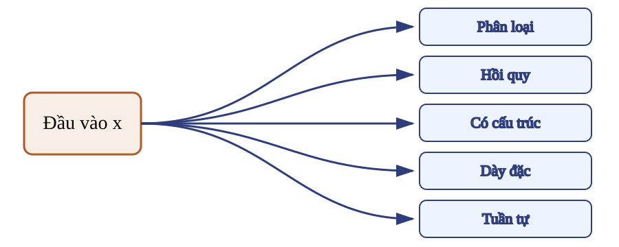
Đầu vào rõ, đầu ra rõ; chuỗi quy tắc ở giữa không rõ.
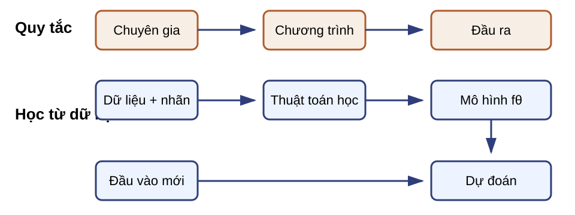
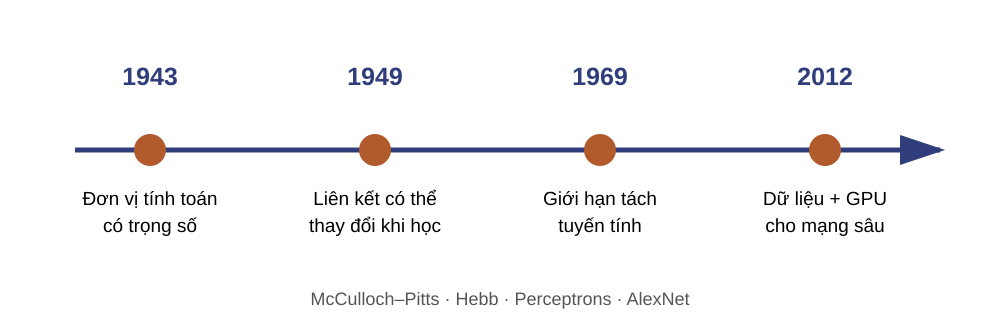
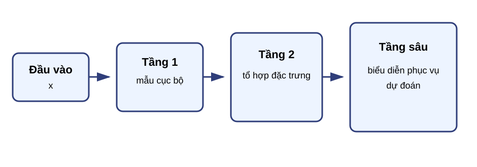
Mỗi tầng biến biểu diễn trước thành biểu diễn hữu ích hơn cho dự đoán.
Các cặp $(x_i,y_i)$ cung cấp kinh nghiệm.
$f_\theta$ là họ ánh xạ có tham số.
Hàm mất mát đo độ sai.
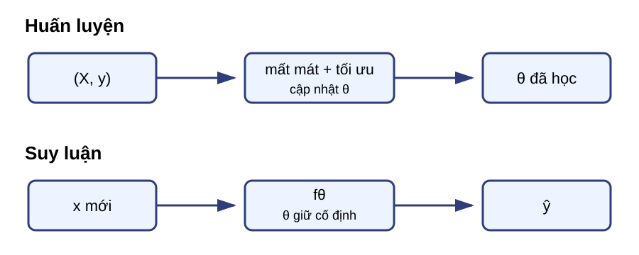
$(x_i,y_i)$ cung cấp ví dụ và đích.
$\theta$ xác định ánh xạ $f_\theta$.
$\hat y=f_\theta(x)$ là đầu ra cho mẫu mới.
Dùng các cặp $(x_i,y_i)$ để tìm $\theta$.
Dùng $f_\theta(x)$ để tạo $\hat y$.
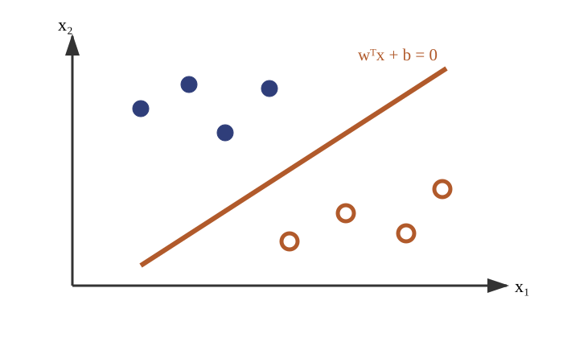
$z=0$ chia không gian thành hai nửa.
Trong hai chiều, biên là một đường thẳng.
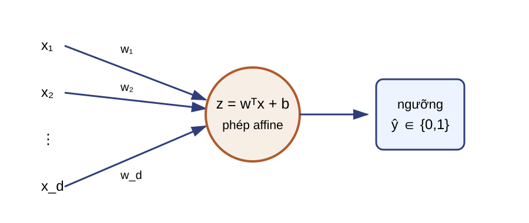
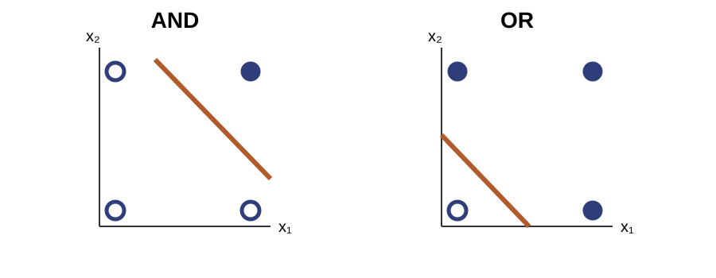
Một perceptron biểu diễn được AND và OR.
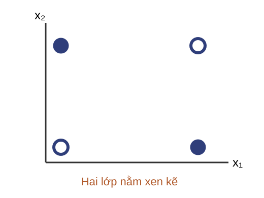
| $x_1$ | $x_2$ | $y$ |
|---|---|---|
| 0 | 0 | 0 |
| 0 | 1 | 1 |
| 1 | 0 | 1 |
| 1 | 1 | 0 |
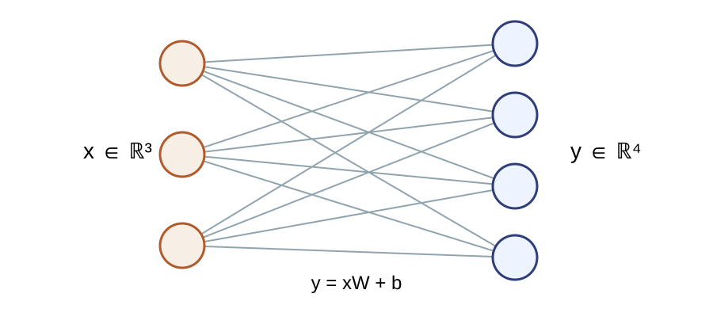
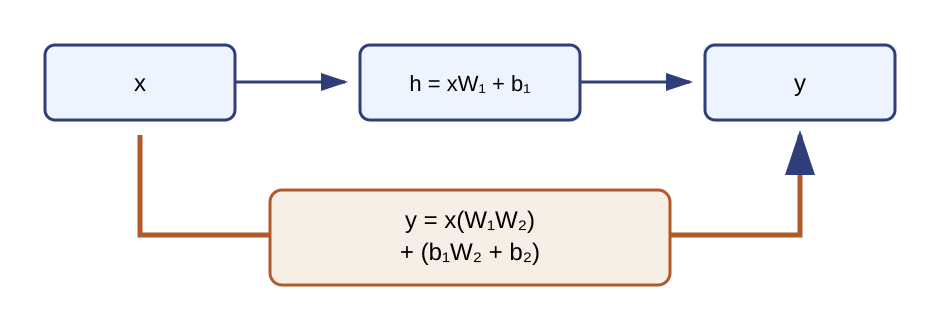
Hai tầng rút thành một phép affine.
Nói chung không thể rút chuỗi thành một phép affine.
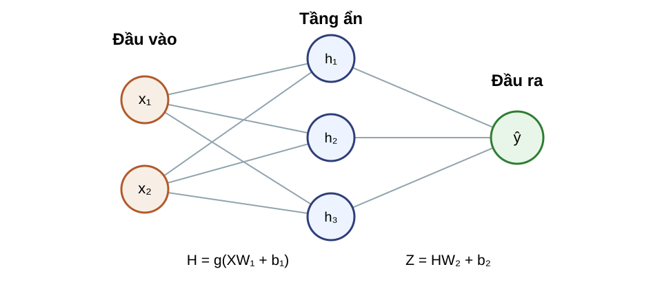
| Đại lượng | Phép tính | Shape |
|---|---|---|
| Đầu vào | $X$ | $B\times d$ |
| Tiền kích hoạt | $A=XW_1+b_1$ | $B\times h$ |
| Tầng ẩn | $H=g(A)$ | $B\times h$ |
| Điểm số | $Z=HW_2+b_2$ | $B\times k$ |
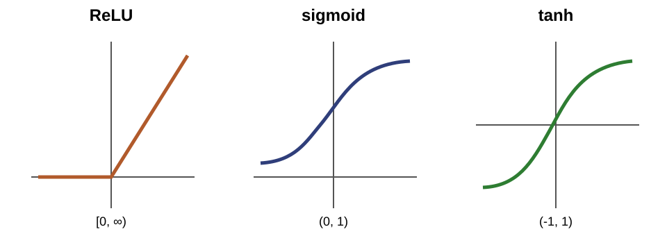
Một logit nhị phân → xác suất.
Đầu ra đối xứng quanh 0.
Cả hai bão hòa khi $|a|$ lớn.
| Bài toán | $Z\in\mathbb R^{B\times k}$ | Đầu ra |
|---|---|---|
| Hồi quy | Logit/điểm số thực | Đồng nhất |
| Nhị phân | $k=1$ | $p=\sigma(Z)$ |
| Nhiều lớp | $k$ logit mỗi hàng | $p_{ic}=\dfrac{e^{Z_{ic}}}{\sum_{r=1}^{k}e^{Z_{ir}}}$ |
Softmax chuẩn hóa theo trục lớp $c$ trong từng hàng, không theo batch.
Tạo biểu diễn phi tuyến.
Một xác suất.
Phân phối theo lớp.
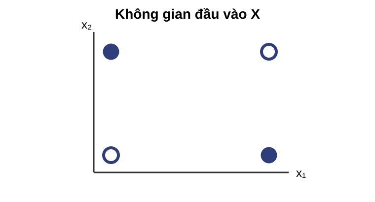
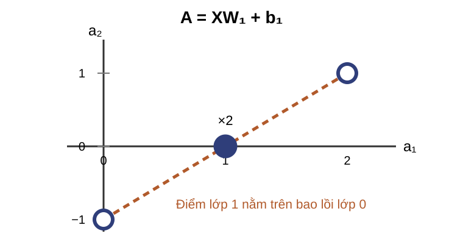
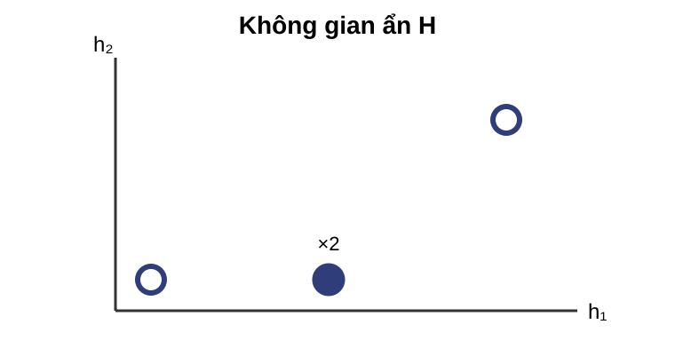
Với mỗi tọa độ ẩn:
Các điểm ở nửa âm bị ép lên biên $h_j=0$.
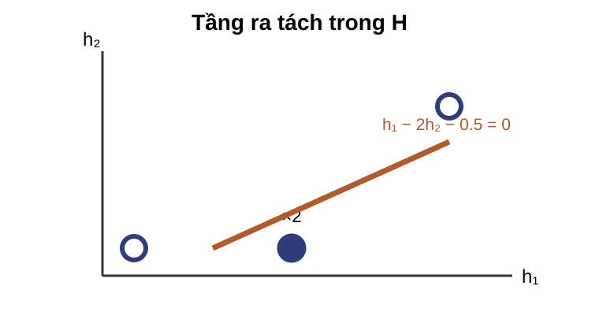
Tầng ra chỉ cần một biên affine trên $H$.
Biên thẳng trong $H$ được kéo ngược thành biên tuyến tính từng đoạn trong $X$.
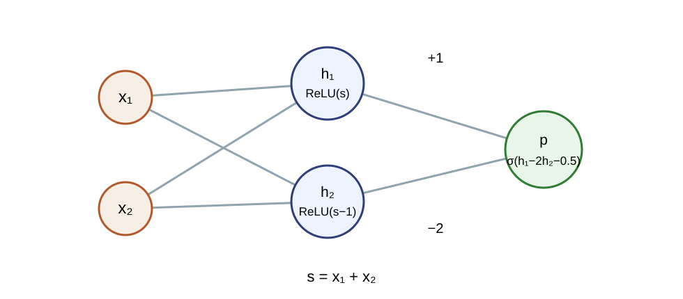
| $x_1,x_2$ | $h_1$ | $h_2$ | logit | $p$ | $\hat y$ |
|---|---|---|---|---|---|
| 0,0 | 0 | 0 | −0.5 | 0.378 | 0 |
| 0,1 | 1 | 0 | 0.5 | 0.622 | 1 |
| 1,0 | 1 | 0 | 0.5 | 0.622 | 1 |
| 1,1 | 2 | 1 | −0.5 | 0.378 | 0 |
Mỗi tầng nhận biểu diễn trước và tạo đầu vào cho tầng kế tiếp.
Kết thúc khi giải thích được giới hạn, cơ chế và phép tính.
| Tầng | Phép tính | Shape đầu ra |
|---|---|---|
| Ẩn 1 | $H_1=g(XW_1+b_1)$ | $B\times h_1$ |
| Ẩn 2 | $H_2=g(H_1W_2+b_2)$ | $B\times h_2$ |
| Ra | $Z=H_2W_3+b_3$ | $B\times k$ |
Số tầng có tham số trong chuỗi hợp thành.
Tạo thêm các bước biến đổi liên tiếp.
Số đơn vị trong một tầng ẩn.
Tạo thêm tọa độ trong cùng một biểu diễn.
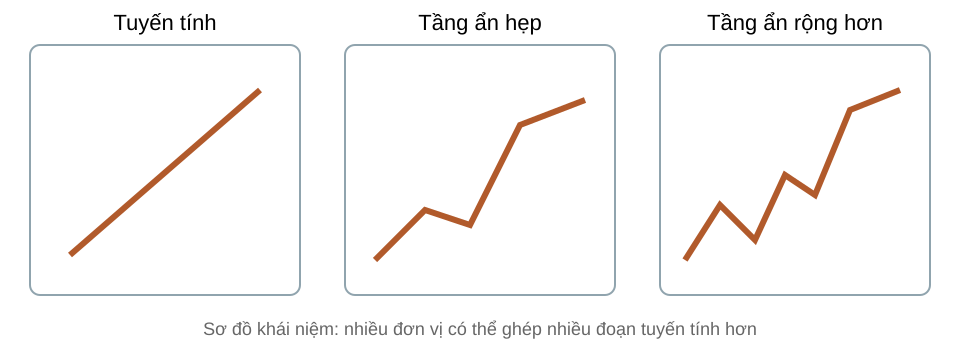
Họ mạng có sức biểu diễn rộng khi đủ đơn vị ẩn.
Tìm được tham số, học từ ít dữ liệu hay khái quát tốt.
Một đơn vị gắn với một mẫu dễ gọi tên.
Một khái niệm nằm trong tổ hợp nhiều đơn vị.
Một khái niệm có thể nằm trong cả vector ẩn, không ở một đơn vị riêng lẻ.
MLP có thể biểu diễn biên phức tạp, nhưng biểu diễn không tự bảo đảm học được hoặc khái quát tốt.